What the Numbers Are Telling You - and What They Aren't
Pete Halbeisen · Statistics - MAT 177
Rev 2.1 · Built May 5, 2026 at 10:14 PM
Topics
1
The Observer EffectYour expectations change what you measure
2
Do Storks Deliver Babies?Correlation is not causation
3
Okun's LawReal correlation in the news every week
4
The Shape of IncomeWhy mean and median tell different stories
5
Survivorship BiasThe data you can't see is often the most important
6
The Birthday ProblemWhy our probability instinct is usually wrong
Section 1 - Psychology
The Observer Effect
When someone knows what result they expect, they can unconsciously influence what they measure - and what the subject does. Good experiments are designed to prevent this.
Clever Hans (1907)
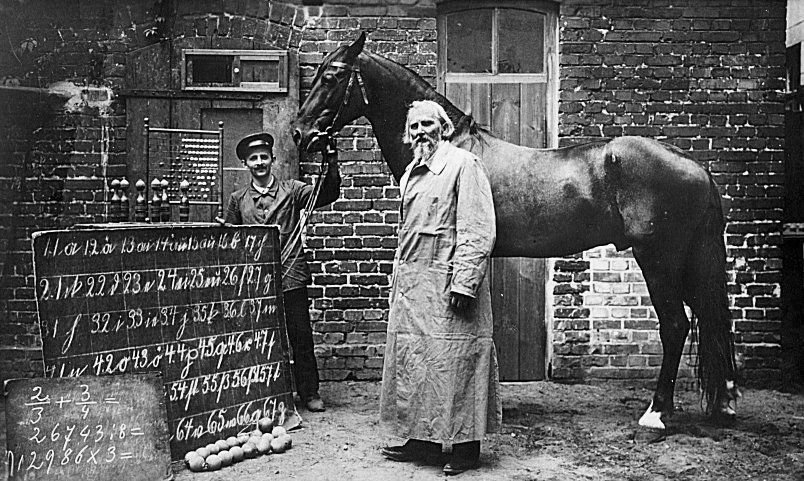
Wilhelm von Osten with Clever Hans, Berlin 1907. The chalkboard shows arithmetic problems Hans was said to solve by tapping his hoof.
Hans appeared to solve arithmetic, spell words, identify musical notes - all by tapping his hoof. Scientific committees found no trickery.
Psychologist Oskar Pfungst ran one decisive test: he varied whether the questioner knew the answer.
Questioner knows → Hans correct 89% of the time
Questioner does not know → Hans correct 6% of the time
Hans was reading involuntary micro-cues in body language. He was not doing math. He was reading people.
The Fix: Blinded Experiments
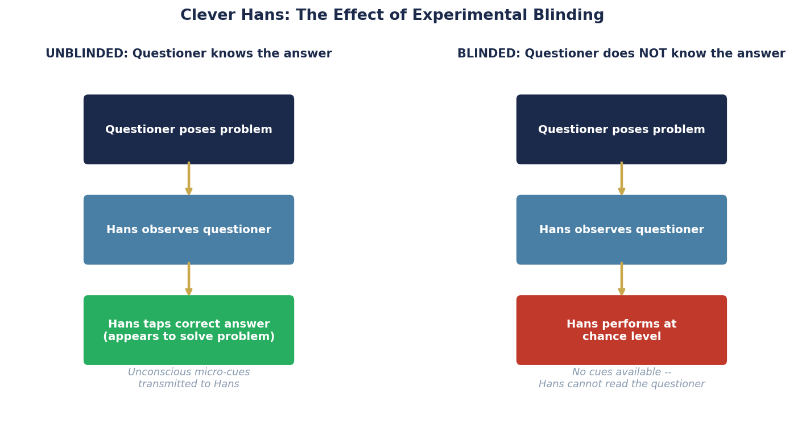
Left: without blinding, Hans reads unconscious cues. Right: blinded - performance collapses to chance.
What the numbers are telling you: When an experiment is properly blinded, the result reflects what is actually happening - not what the observer expects.
What they aren't telling you: An unblinded result may be measuring the observer's expectations just as much as the phenomenon itself. This applies to drug trials, AI training data, and any situation where the measurer knows the desired outcome.
Poker: Controlling Information Leakage
A championship player at the World Series of Poker. Every piece of attire is a deliberate countermeasure against information leakage.
Championship poker is not just about the cards. It is about controlling what information leaks from you to the people watching you.
Professionals have independently reinvented experimental blinding as competitive strategy:
Mirrored sunglasses - pupil dilation is an involuntary response to excitement that opponents can read. Research by Einhäuser, Koch & Carter (2010) confirmed that pupil changes betray the timing of decisions, even in competitive settings.
Consistent bet timing - fast bets signal confidence; slow bets signal uncertainty. Professionals use the same deliberate pause on every decision regardless of hand strength, eliminating the timing channel entirely.
Deliberate false tells - Mike Caro's foundational work Caro's Book of Poker Tells (2003) documents the advanced strategy of consciously planting misleading signals - acting weak with a strong hand, or strong with a weak one - to reverse-engineer the Clever Hans effect against opponents.
Neutral attire - hoods, hat brims, and scarves mask jaw tension and neck movements that are nearly impossible to consciously suppress.
The goal is identical to Pfungst's blinded condition: make your observable behavior carry zero information about your private state.
Artificial Intelligence: The Most Impressionable Subject of All
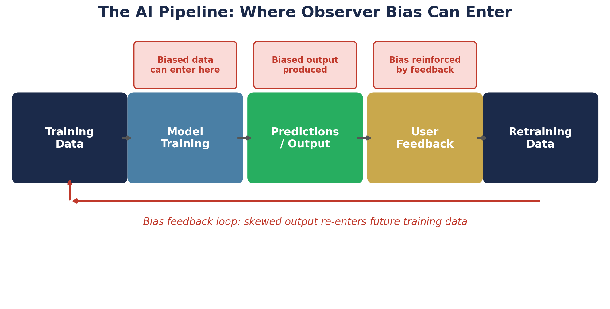
The AI training pipeline. Bias enters at the data labeling stage and compounds through feedback loops across multiple training cycles.
AI models have no intrinsic understanding - they learn entirely from what they are shown. This makes them the most impressionable subjects ever created.
Three mechanisms through which bias enters:
Labeled training data - if the humans who labeled the data held systematic expectations, the model learns those expectations, not the underlying truth
Feedback loops - model outputs influence what users see; user behavior feeds back into future training data; bias compounds with each cycle
Benchmark design - models evaluated on benchmarks assembled by researchers with specific expectations may learn to pass the benchmark rather than acquire genuine capability
What the numbers are telling you: A model trained on diverse, audited data reflects reality. A biased model reflects expectations.
What they aren't telling you: Hans learned to read one questioner. A biased AI reflects those expectations back to millions of people simultaneously - at scale, continuously.
Discussion: When an AI confidently gives you a wrong answer - what does Clever Hans suggest about where that confidence came from?
Section 1 - Quick Check
A pharmaceutical company runs a trial where doctors know which patients are receiving the real drug. What problem does this create?
Section 2 - Biological Statistics
Do Storks Deliver Babies?
Two things can be strongly correlated - even with a statistically significant result - and have absolutely no causal connection. A hidden third variable can explain the whole thing.
A Real Study. A Real Result.
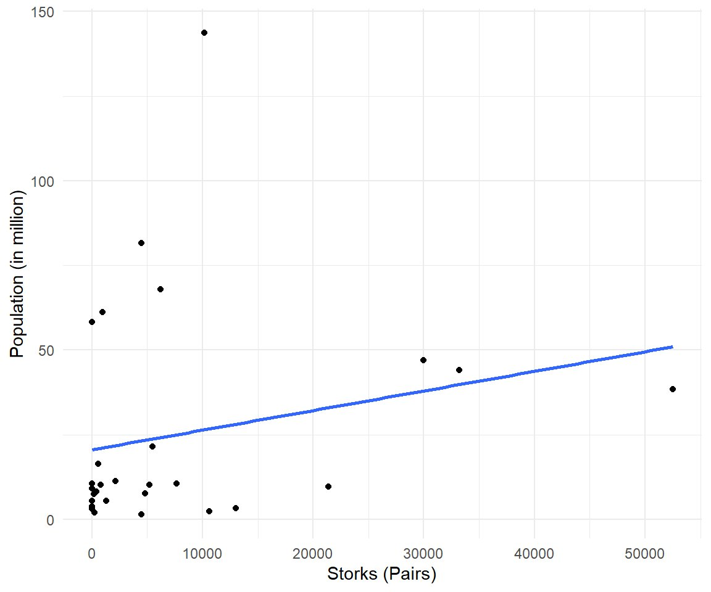
Stork breeding pairs vs. human birth rate, 17 European countries. Matthews (2000), Teaching Statistics.
Statistician Robert Matthews, 2000:
0.62Correlation (r)
0.008p-value
What is the correlation coefficient (r)?
r measures how closely two variables move together, on a scale from -1 to +1. A value of 0 means no relationship. A value of +1 means a perfect positive relationship -- when one goes up, the other goes up by exactly the same proportion every time. At r = 0.62, storks and births move together moderately strongly -- not perfectly, but consistently enough to show a clear upward trend in the chart.
What is the p-value?
The p-value answers: if there were truly no relationship between these two variables, how likely is it that we would see a correlation this strong just by random chance? A p-value of 0.008 means there is less than a 1% chance the result is a fluke. By conventional standards, that makes this result statistically significant -- it is almost certainly a real pattern in the data, not noise.
So... do storks deliver babies?
The result is real. The interpretation is wrong. A genuine correlation with a tiny p-value can still be completely meaningless causally. This is the most important thing statistics can teach you.
The Confounding Variable
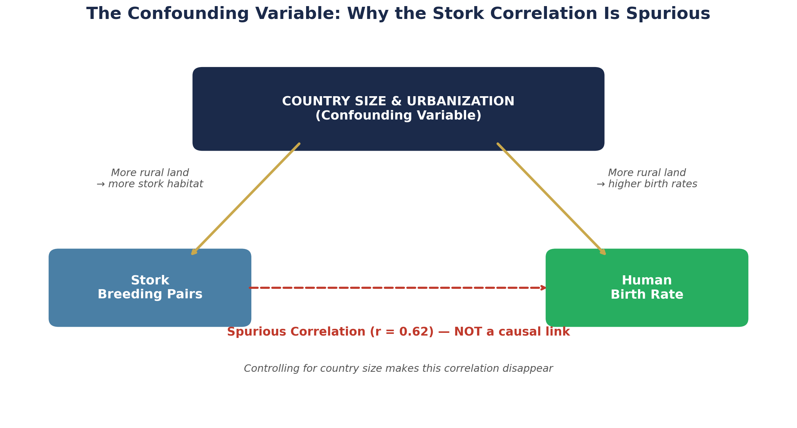
What the numbers are telling you: There is a real, statistically significant positive correlation (r = 0.62) between stork populations and human birth rates across European countries.
What they aren't telling you: Neither causes the other. Both are driven by country size. A correlation number alone never tells you whether a relationship is causal - that requires knowing the context and ruling out confounders.
Section 2 - Quick Check
A study finds that students who eat breakfast get better grades. What should a researcher investigate before concluding that breakfast improves grades?
Section 3 - Economics
Okun's Law
Some correlations are strong, well-documented, and practically useful - even when they are not perfect. Learning to read a scatter plot tells you as much as the number itself.
GDP Growth vs. Unemployment
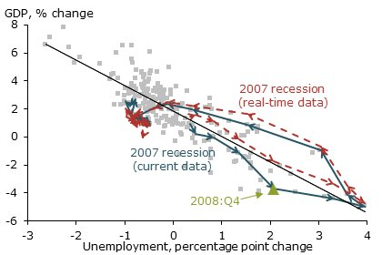
Federal Reserve Bank of San Francisco. Each point is one quarter of U.S. data. Arrows trace the 2007-09 recession in real time vs. hindsight.
Arthur Okun, 1962: when the economy grows, unemployment falls. When it shrinks, unemployment rises.
⅓ to ½ ptUnemployment change per 1% GDP change
−0.5 to −0.9Typical r range
Moderate to strong negative correlation - consistent across six decades of U.S. data.
Note the scatter. The relationship is real but not mechanical.
The Lag: Why It's Messier Than It Looks
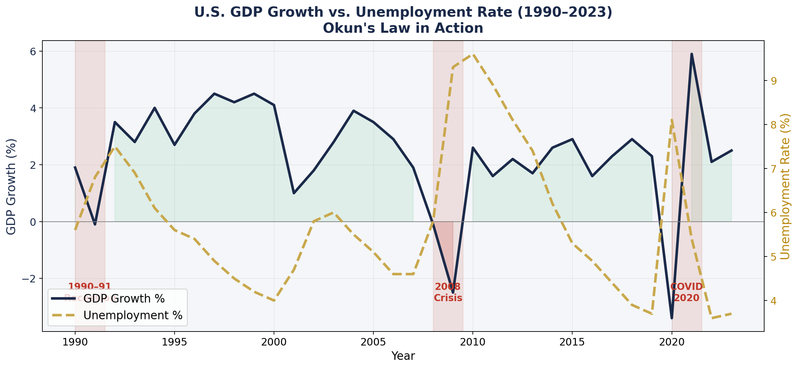
GDP growth (navy) and unemployment rate (gold dashed) 1990-2023. Unemployment peaks after GDP has already started recovering.
What the numbers are telling you: GDP and unemployment move together in a consistent pattern that holds across decades.
What they aren't telling you: The relationship is not instant. The lag means the job market can feel broken long after the economy has turned around - and both the economist and the unemployed worker can be right at the same time.
Section 3 - Quick Check
The economy officially came out of a recession six months ago. GDP is growing again. But unemployment is still rising. A student says: "The recession can't be over - people are still losing jobs." Is the student wrong?
Section 4 - Economics
The Shape of Income
The shape of a distribution determines which summary statistics are honest. In a right-skewed distribution like income, the mean, median, and mode tell very different stories - and people in power know which one to reach for.
The Real Shape of Income
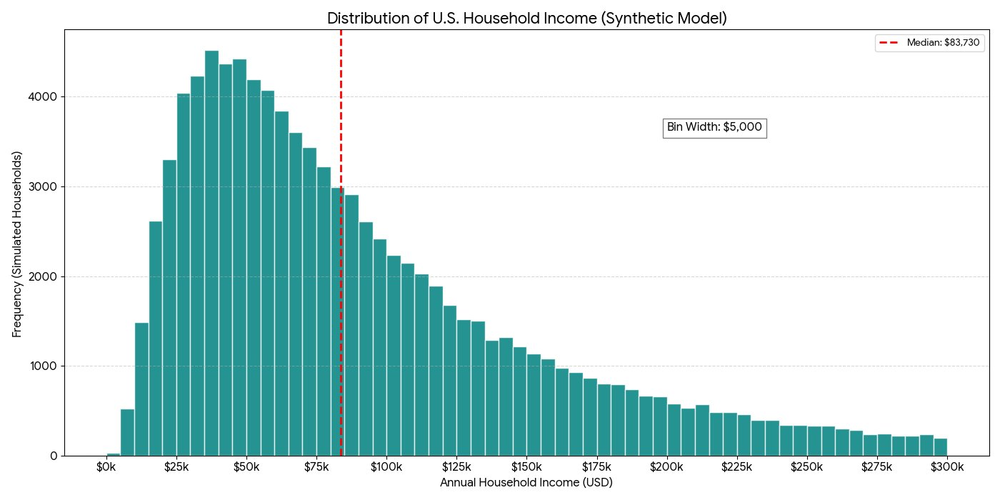
U.S. household income distribution. The red dashed line marks the median (~$83,730). The distribution has a long right tail - a small number of very high earners pull the mean well above what most households actually bring home. Source: U.S. Census Bureau, 2023.
What the numbers are telling you: Most households earn between $25,000 and $100,000. The distribution is right-skewed - it has a long tail extending far to the right.
What they aren't telling you: A single "average" income figure conceals the entire shape of this distribution. The mean and median sit in very different places - and which one you use changes the story completely.
Mean vs. Median - Why It Matters
A company: 9 workers at $40,000, one CEO at $1,000,000.
Measure
Value
What it represents
Mean salary
$136,000
Pulled up by the CEO
Median salary
$40,000
What a typical worker earns
In a right-skewed distribution:
Most common → Median → Mean
If mean > median: right-skewed. Every time you see income data - ask: mean or median?
What the numbers are telling you: Median household income is ~$83,730. The distribution is right-skewed with a long tail.
What they aren't telling you: A mean income figure isn't telling you what most people earn. It reflects everyone including a small number of ultra-high earners.
Income by Bracket: What the Numbers Actually Look Like
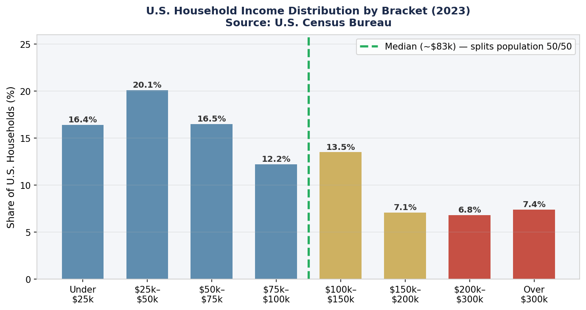
U.S. household income by bracket, 2023. The green dashed line marks the median (~$83k) - half of all households fall to the left of it. Source: U.S. Census Bureau.
What the numbers are telling you: Most households - about 65% - earn under $100,000 per year. The median sits at roughly $83,000.
What they aren't telling you: The 7.4% of households earning over $300,000 pull the mean income well above $100,000. That top group earns enough to move the average for everyone.
The Growing Gap: 40 Years of Income in America
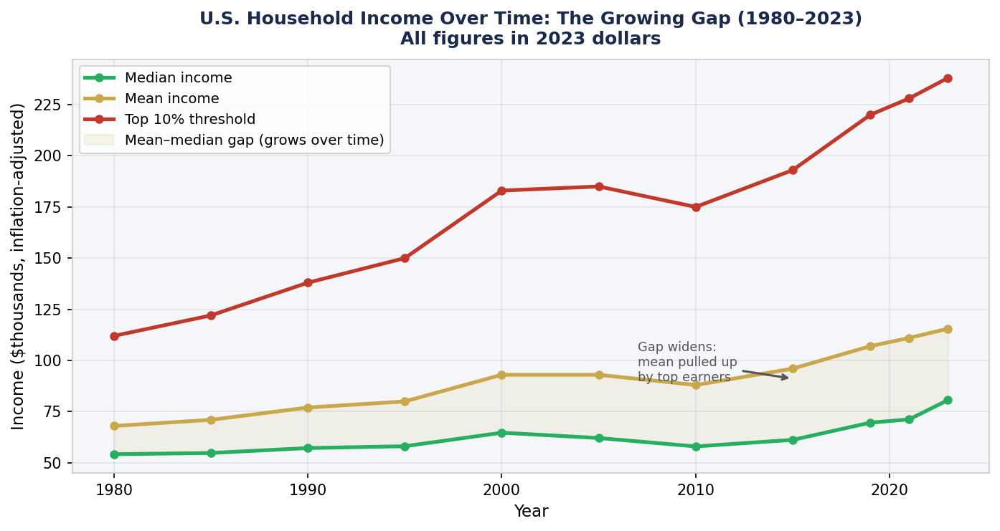
Median, mean, and top-10% income threshold, 1980 - 2023, inflation-adjusted to 2023 dollars. Source: U.S. Census Bureau / CBO.
What the numbers are telling you: All three lines have risen since 1980. Median income is higher in real terms than it was 40 years ago.
What they aren't telling you: The mean has grown much faster than the median - meaning the gains have concentrated at the top. The widening gap between the two lines is a measure of increasing skew. If the distribution were symmetric, the lines would track each other closely.
The Lorenz Curve: Making Inequality Visible
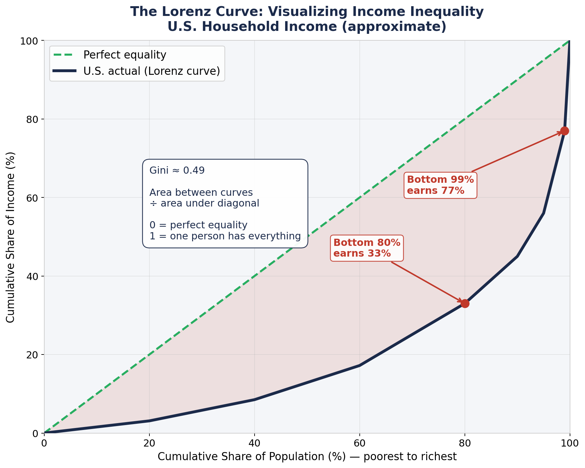
The further the Lorenz curve bows away from the diagonal, the more unequal the distribution.
The Lorenz curve plots cumulative population share against cumulative income share.
If income were perfectly equal, the curve would follow the diagonal - the bottom 20% would earn 20%, the bottom 50% would earn 50%.
In the U.S.:
The bottom 50% earn about 10% of total income
The bottom 80% earn about 33% of total income
The top 1% earn about 23% of total income
The Gini coefficient is the area between the Lorenz curve and the diagonal, divided by the total area under the diagonal. It summarizes the entire shape of the distribution in one number between 0 and 1.
How the U.S. Compares: International Gini Coefficients
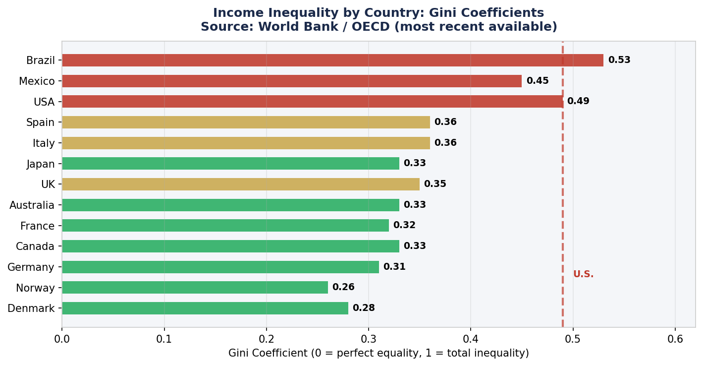
Gini coefficients by country. Green = more equal, yellow = moderate, red = more unequal. Source: World Bank / OECD.
What the numbers are telling you: The U.S. Gini coefficient (~0.49) is substantially higher than most other wealthy nations, which cluster between 0.26 and 0.36.
What they aren't telling you: A Gini coefficient is a summary - it collapses the entire shape of the distribution into one number. Two countries with the same Gini could have very different distributions. And Gini measures income, not wealth - the wealth picture is even more concentrated.
Income vs. Wealth: Two Different Levels of Skew
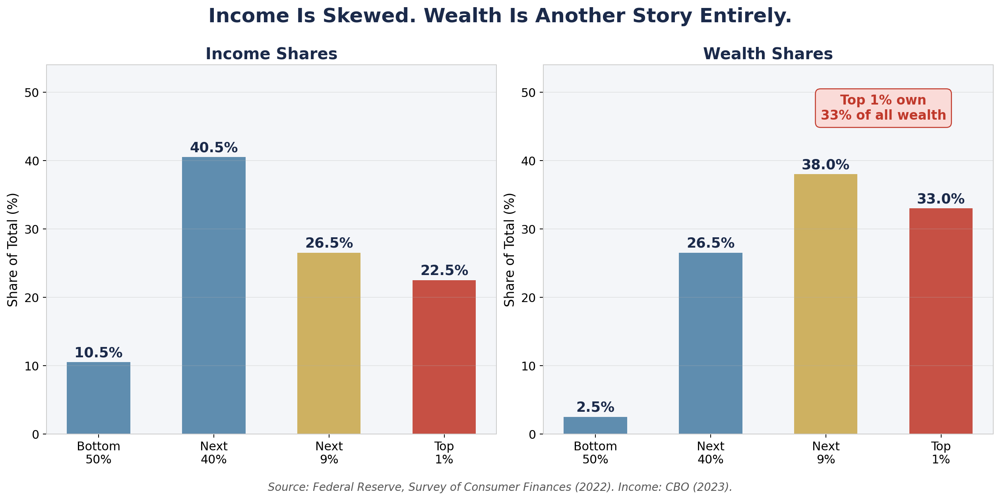
Income and wealth shares by population group. The top 1% own 33% of all wealth - far more concentrated than income. Source: Federal Reserve Survey of Consumer Finances (2022).
What the numbers are telling you: Income is right-skewed. Wealth - assets minus debts - is dramatically more concentrated. The bottom 50% of Americans own about 2.5% of total wealth.
What they aren't telling you: Income tells you what flows in each year. Wealth tells you what has accumulated over time. They are related but very different measures. High income does not automatically mean high wealth - and low income does not always mean low wealth. The distributions look similar in shape but the wealth distribution is far more extreme.
The Billionaire Slider: How One Outlier Moves the Mean
30 people from a statistics class all earn $50,000 per year after graduation. Then one person founds a startup and becomes a billionaire.
$50,000Mean - pulled by outlier
$50,000Median - unchanged
$50,000Mode - unchanged
Drag right. The median and mode never move - only the mean does.
Section 4 - Quick Check
A news anchor reports: "The average American household income rose to $115,000 last year." A researcher says: "But most households are still struggling." How can both statements be true?
Section 5 - Research Methods
Survivorship Bias
We systematically observe only the cases that survived, succeeded, or made it through some filter. The missing cases are often where the real lesson lives.
Abraham Wald and the WWII Bombers
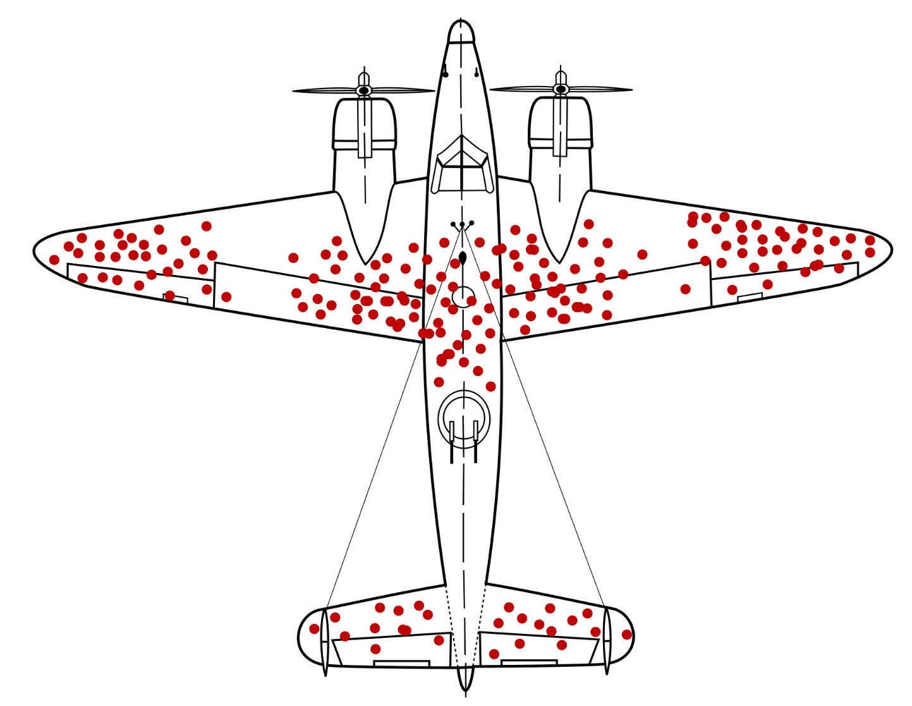
Hypothetical damage pattern on a returning WWII bomber. Red dots show where returning planes were hit. Engine hits are rare on returned planes - not because engines were never hit, but because planes hit in the engines rarely made it back. Source: McGeddon / Wikimedia Commons, CC BY-SA 4.0.
Bombers were being shot down at an unsustainable rate. Engineers mapped bullet holes on returned planes - mostly wings, fuselage, and tail. Proposal: reinforce those areas.
Mathematician Abraham Wald pointed out this was exactly backwards.
Holes in wings/fuselage = survivable hits
Engine hits = plane never came back
Far fewer hits on engines than elsewhere - those hits were more likely to be fatal
The underrepresentation of engine damage was the signal.
Survivorship Bias in Investing
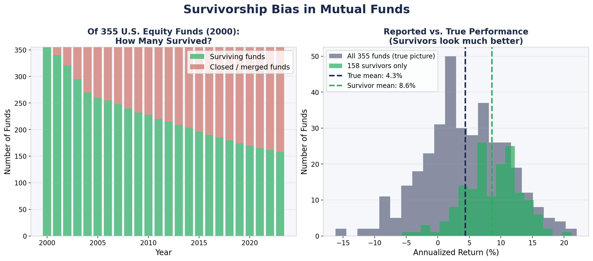
Left: of 355 equity funds in 2000, fewer than half survived to 2023. Right: surviving funds show much higher returns - poor performers erased from the advertised history.
What the numbers are telling you: The reported fund performance figures show the record of funds that still exist.
What they aren't telling you: Anything about the funds that failed. Studies estimate survivorship bias inflates reported mutual fund performance by 1-3 percentage points per year - which compounds into a dramatically misleading picture over time.
Section 5 - Quick Check
A business school publishes the average starting salary of its graduates as $85,000. What group is most likely missing from that figure?
Section 6 - Probability
The Birthday Problem
Human probability intuition is deeply unreliable - especially when it comes to coincidences. The math consistently shows that surprising things happen far more often than we expect.
What's Your Guess?
In a room of 30 people, what is the probability that at least two share a birthday?
0.3%probability of at least one shared birthday
Drag the slider. At what number does it cross 50%?
Why Our Intuition Fails
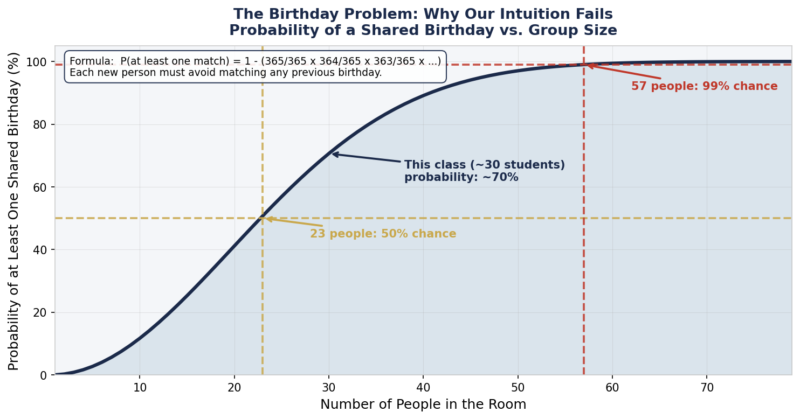
The curve crosses 50% at just 23 people - far sooner than almost anyone guesses.
People
Probability
10
12%
20
41%
23
50%
30
70%
40
89%
57
99%
With 30 people there are 435 possible pairs. Our intuition asks: "what's the chance someone shares my birthday?" The real question is: "what's the chance any two people share any birthday?"
What the numbers are telling you: In a group of 23, a shared birthday is more likely than not.
What they aren't telling you: This isn't magic. The number of possible pairs grows much faster than the number of people - and that drives the probability up fast.
Section 6 - Quick Check
Two people meet at a party and discover they share a birthday. One says: "What are the odds - there are 365 days in a year!" Why is this reaction statistically misleading?
Live Demo - Try It Right Now
Go around the room. Say your birthday out loud. Call "match!" when you hear one repeated.
70.6%chance of a match in this class
If no match occurs - that happens about 30% of the time in a class of 30. Run this in 10 classes and you'll see a match in roughly 7 of them.
Six Questions You Now Know to Ask
1. Was the measurement blinded?Could the observer's expectations have influenced the result?
2. Is this a correlation?What might a hidden third variable be?
3. How strong is the relationship?How much scatter is there around the regression line?
4. Mean or median?What shape is the underlying distribution?
5. Am I only seeing survivors?What happened to the cases not in this data?
6. How many chances were there?Is this coincidence as surprising as it looks?
You don't need a calculator to ask these questions. You need the vocabulary you've built this semester.
A statistical thinker is not someone who distrusts numbers. It is someone who knows exactly what to ask before trusting them.